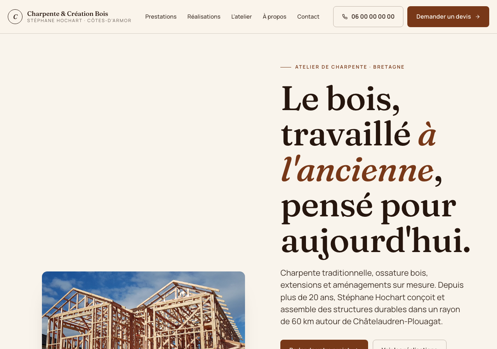
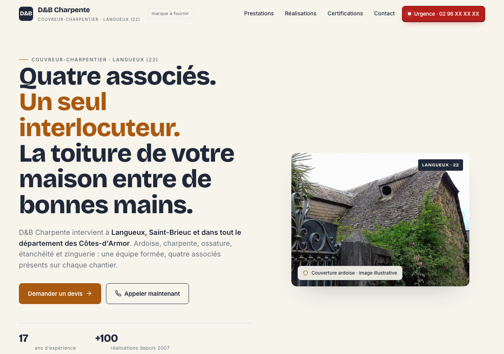
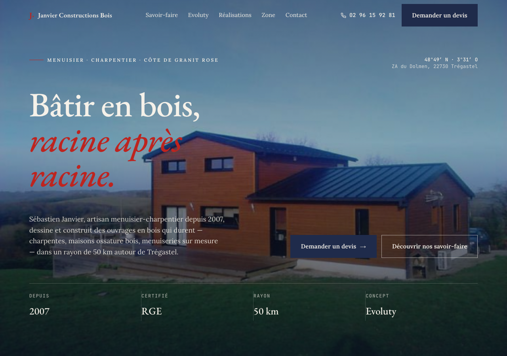
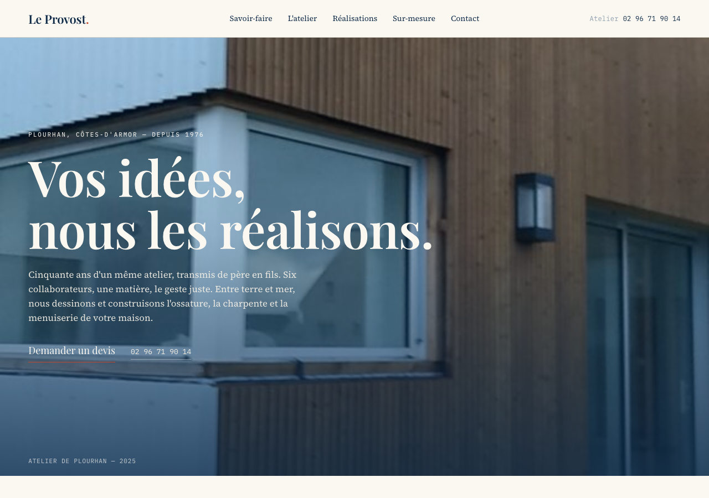
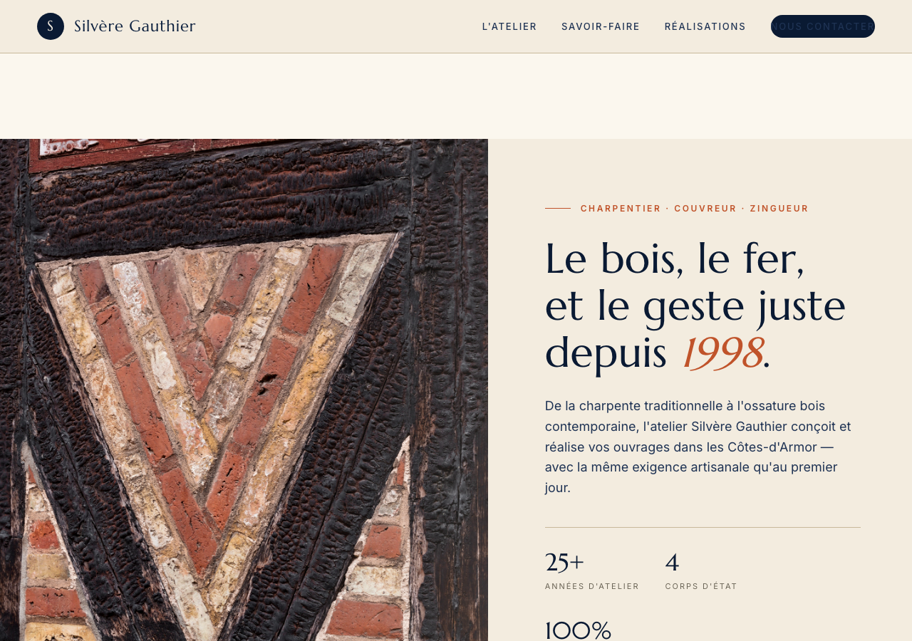

🟢 Mail prêtv2
BQC Couverture
Ardoise + cuivre + parchemin (Bricolage Grotesque)
Google: 5.0 ⭐ (3 avis)
Démos HTML générées pour prospecter des couvreurs/charpentiers des Côtes-d'Armor. Chaque démo a sa propre direction visuelle, son contenu réel (pas d'invention), et les coordonnées du dirigeant.






